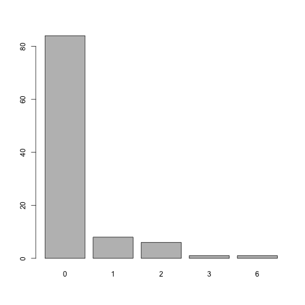

Aim of the package
The goal of coder is to classify items from one dataset, using codes from a secondary source with classification schemes based on regular expressions and weighted indices.
Installation
You can (soon) install the released version of coder from CRAN with:
# install.packages("coder") # Not yet!And the development version from GitHub with:
# install.packages("remotes")
remotes::install_github("eribul/coder")Typical use case
- Determining comorbidities before clinical trials
- Discovering adverse events after surgery
Patient data: The initial rationale for the package was to classify patient data based on medical coding. A typical use case would consider patients from a medical/administrative data base, as identified by some patient id and possibly with some associated date of interest (date of diagnoses/treatment/intervention/hospitalization/rehabilitation). This data source could be for example an administrative hospital register or a national quality register.
Codify: The primary source could then be linked to a secondary (possibly larger) data base including the same patients with corresponding id:s and some coded patient data. This could be a national patient register with medical codes from the International Classification of Diseases (ICD) with corresponding dates of hospital visits/admission/discharge, or a medical prescription register with codes from the Anatomic Therapeutic Chemical (ATC) classification system with dates of medical prescription/dispatch/usage. A time window could be specified relating the date of the primary source (i. e. the date of a primary total hip arthroplasty; THA), to dates from the secondary source (i.e. the date of a medical prescription). ATC codes associated with medical prescriptions during one year prior to THA, could thus be identified and used as a measure of comorbidity. Another time window of 90 days after THA, might instead be used to identify adverse events after surgery.
Classify: To work with medical/chemical codes directly might be cumbersome, since those classifications tend to be massive and therefore hard to interpret. It is thus common to use data aggregation as proposed by some classification or combined index from the literature. This could be the Charlson or Elixhauser comorbidity indices based on ICD-codes, or the RxRisk V classification based on ATC-codes. Each of those tools appear with different code versions (ICD-8, ICD-9, ICD-9-CM, ICD-10, ICD-10-CA, ICD-10-SE, ICD-10-CM et cetera) and with different codes recognized as relevant comorbidities (the Charlson index proposed by Charlson et al, Deyo et al, Romano et al. Quan et al. et cetera). Using a third object (in addition to the primary and secondary patient data sets) helps to formalize and structure the use of such classifications. This is implemented in the coder package by classcodes objects based on regular expressions (often with several alternative versions). Those classcodes objects could be prepared by the user, although a number of default classcodes are also included in the package (table below).
Index: Now, instead of working with tens of thousands of individual ICD-codes, each patient might be recognized to have none or some familiar comorbidity such as hypertension, cancer or dementia. This granularity might be too fine-grained still, wherefore an even simpler index score might be searched for. Such scores/indices/weighted sums have been proposed as well and exist in many versions for each of the standard classifications. Some are simple counts, some are weighted sums, and some accounts for some inherited hierarchy (such that ICD-codes for diabetes with and without complications might be recognized in the same patient, although the un-complicated version might be masked by the complicated version in the index).
Conditions: Some further complexity might appear if some codes are only supposed to be recognized based on certain conditions. Patients with THA for example might have an adverse event after surgery if a certain ICD-code is recorded as the main diagnose at a later hospital visit, although the same code could be ignored if recorded only as a secondary diagnosis.
To summarize: The coder package takes three objects: (1) a data frame/table/tibble with id and possible dates from a primary source; (2) coded data from a secondary source with the same id and possibly different dates and; (3) a classcodes object, either a default one from the package, or as specified by the user. The outcome is then: (i) codes associated with each element from (1) identified from (2), possibly limited to a relevant time window; (ii) a broader categorization of the relevant codes as prescribed by (3), and; (iii) a summarized index score based on the relevant categories from (3).
(i-iii) corresponds to the output from functions codify(), classify() and index(), which could be chained explicitly as codify() %>% classify() %>% index(), or implicitly by the categorize() function.
Usage
Assume we have some patients with surgery at specified dates:
library(coder)
ex_people
#> # A tibble: 100 x 2
#> name surgery
#> <chr> <date>
#> 1 Chen, Trevor 2020-09-29
#> 2 Graves, Acineth 2020-06-21
#> 3 Trujillo, Yanelly 2020-06-08
#> 4 Simpson, Kenneth 2020-09-10
#> 5 Chin, Nelson 2020-08-24
#> 6 Le, Christina 2020-03-28
#> 7 Kang, Xuan 2020-06-30
#> 8 Shuemaker, Lauren 2020-03-29
#> 9 Boucher, Teresa 2020-09-04
#> 10 Le, Soraiya 2020-08-09
#> # ... with 90 more rowsThose patietns (among others) were also recorded in a national patient register with date of hospital admissions and diagnoses codes coded by the International Classification of Diseases (ICD) version 10:
ex_icd10
#> # A tibble: 2,376 x 4
#> name admission icd10 hdia
#> <chr> <date> <chr> <lgl>
#> 1 Tran, Kenneth 2020-04-12 S134A FALSE
#> 2 Tran, Kenneth 2020-09-26 W3319 FALSE
#> 3 Tran, Kenneth 2020-09-05 Y0262 TRUE
#> 4 Tran, Kenneth 2020-07-29 X0488 FALSE
#> 5 Sommerville, Dominic 2020-09-17 V8104 FALSE
#> 6 Sommerville, Dominic 2020-04-28 B853 FALSE
#> 7 Sommerville, Dominic 2020-09-12 Q174 FALSE
#> 8 Sommerville, Dominic 2020-05-03 A227 FALSE
#> 9 Sommerville, Dominic 2020-09-07 H702 FALSE
#> 10 Sommerville, Dominic 2019-12-31 X6051 TRUE
#> # ... with 2,366 more rowsUsing those two data sets, as well as a classification scheme (classcodes object; see below), we can easily identify all Charlson comorbidities for each patient:
ch <-
categorize(
ex_people, # patients of interest
codedata = ex_icd10, # Medical codes from national patient register
cc = "charlson", # Calculate Charlson comorbidity
id = "name", code = "icd10" # Specify column names
)
#> Classification based on: icd10
ch
#> # A tibble: 100 x 25
#> name surgery `myocardial inf~ `congestive hea~ `peripheral vas~
#> <chr> <date> <lgl> <lgl> <lgl>
#> 1 Arch~ 2020-05-25 FALSE FALSE FALSE
#> 2 Awtr~ 2020-09-20 FALSE FALSE FALSE
#> 3 Bamm~ 2020-03-25 FALSE FALSE FALSE
#> 4 Bank~ 2020-06-18 FALSE FALSE FALSE
#> 5 Bega~ 2020-06-19 FALSE FALSE FALSE
#> 6 Beni~ 2020-02-24 FALSE FALSE FALSE
#> 7 Bhat~ 2020-10-12 FALSE FALSE FALSE
#> 8 Bouc~ 2020-09-04 FALSE FALSE TRUE
#> 9 Carn~ 2020-09-11 FALSE FALSE FALSE
#> 10 Chap~ 2020-05-18 FALSE FALSE FALSE
#> # ... with 90 more rows, and 20 more variables: `cerebrovascular
#> # disease` <lgl>, dementia <lgl>, `chronic pulmonary disease` <lgl>,
#> # `rheumatic disease` <lgl>, `peptic ulcer disease` <lgl>, `mild liver
#> # disease` <lgl>, `diabetes without complication` <lgl>, `hemiplegia or
#> # paraplegia` <lgl>, `renal disease` <lgl>, `diabetes complication` <lgl>,
#> # malignancy <lgl>, `moderate or severe liver disease` <lgl>, `metastatic
#> # solid tumor` <lgl>, `AIDS/HIV` <lgl>, charlson <dbl>, deyo_ramano <dbl>,
#> # dhoore <dbl>, ghali <dbl>, quan_original <dbl>, quan_updated <dbl>How many patietns were diagnosed with malignancy?
sum(ch$malignancy)
#> [1] 5What is the distribution of the combined comorbidity index for each patient?
hist(
ch$charlson,
col = "lightblue",
main = "Patient comorbidity",
xlab = "Charlson comorbidity index"
)
There are in many versions of the Charlson comorbidity index, which might be controlled by the index argument. We might also be interested only in diagnoses from 90 days before surgery:
ch <-
categorize(
ex_people, codedata = ex_icd10, cc = "charlson", id = "name", code = "icd10",
# Additional arguments
index = c("quan_original", "quan_updated"),
codify_args = list(
date = "surgery", code_date = "admission", # Specify date columns
days = c(-90, -1) # Time window
)
)
#> Classification based on: icd10Number of malignancies during this period?
sum(ch$malignancy, na.rm = TRUE)
#> [1] 3Distribution of the index as proposed by QUan et al 2011 during the 90 day period:
hist(ch$quan_updated, main = "COmorbidity index by Quan et al. 2011")
Classification schemes
Classification schemes (classcodes objects) are based on regular expressions for computational speed, but their content can be summarized and visualized for clarity. Arbitrary classcodes objects can also be specified by the user.
The package includes default classcodes for medical patient data based on the international classification of diseases version 8, 9 and 10 (ICD-8/9/10), as well as the Anatomical Therapeutic Chemical Classification System (ATC) for medical prescription data.
Default classcades are listed in the table. Each classification (classcodes column) can be based on several code systems (regex column) and have several alternative weighted indices (indices column). Those might be combined freely.
coder::all_classcodes()
#> # A tibble: 7 x 3
#> classcodes regex indices
#> <chr> <chr> <chr>
#> 1 charlson icd10, icd9cm_deyo, icd9cm_enhan~ "charlson, deyo_ramano, dhoore~
#> 2 cps icd10 "only_ordinary"
#> 3 elixhauser icd10, icd10_short, icd9cm, icd9~ "sum_all, sum_all_ahrq, walrav~
#> 4 hip_ae icd10, kva, icd10_fracture ""
#> 5 hip_ae_hail~ icd10, kva ""
#> 6 knee_ae icd10, kva ""
#> 7 rxriskv atc_pratt, atc_caughey, atc_garl~ "pratt, sum_all"Relation to other packages
coder uses data.table as a backend to increase computational speed for large datasets. There are some R packages with a narrow focus on Charlson and Elixhauser co-morbidity based on ICD-codes (icd, comorbidity, medicalrisk, comorbidities.icd10, icdcoder). The coder package includes similar functionalities but has a wider scope.
Contribution
Contributions to this package are welcome. The preferred method of contribution is through a github pull request. Feel free to contact me by creating an issue. Please note that this project is released with a Contributor Code of Conduct. By participating in this project you agree to abide by its terms.